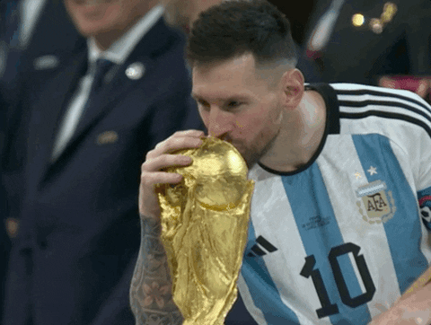

The 2022 Fifa World Cup took place in Qatar in December due to the extreme heat. Holding it in Qatar was controversial for many reasons, including allegations of bribery and corruption, bigotry, and unenthusiastic fans. 1.5 billion people watched Argentina beat France in the final after an exhilerating 120 minutes. Emiliano Martinez from Argentina won the Golden Boot (best goalkeeper), his teammate Enzo Fernandez won the FIFA Young Award, France's Killian Mbappe won the Golden Boot for having the most goals, and, of course, Lionel Messi won the Golden Ball for being the best player in the tournament.

Iconic FIFA President Speech after criticism of the World Cup in QatarHighlights of the final